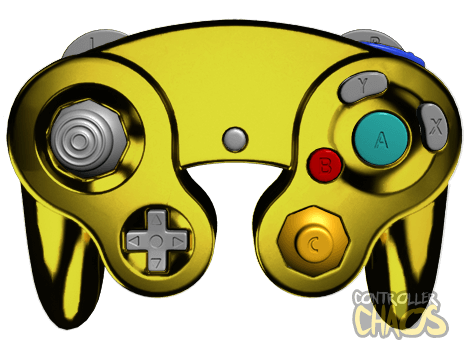

The Almighty Cube
New consoles come every few years, but sometimes it's fun to replay the classics, especially when they are remade. Most times our favourite games aren't remastered, so we have to rely on passionate modders or just stick to the old versions. With a new wave of individuals flooding into the gaming scene, legendary games have been burried or forgotton.
Out of all consoles, what is the most classic? Which one is most memorable and do the games still hold up? The oldest speedrunning game that is still popular to this day is Super Mario 64. The controls are a little clunky but the technical capabilities make for a skilled run. The graphics arguably don't hold up to this day though, and the level design is barren because the open worlds pushed the limits of console memory.
The console that sticks with me to this day is the Gamecube, but specifically for Nintendo's titles alone except for a few others. Nintendo's games from the early 2000s have a retro feel with fine details. Super Mario Sunshine, Melee, and Mario Sports games have only minor imperfections if you look very close, but the games are very optimized. The colours of most home titles are vibrant, but not over saturated to give you a warm feeling. The nature of Nintendo games with simple designs and fun voice acting make the atmosphere feel alive.